1 The Ohakune carrot is reportedly the largest model carrot in the world and the largest
vegetable in New Zealand, a 7.5m (25ft) fiberglass sculpture first installed in 1984 for a commercial. Ohakune
was home to many Chinese market gardens (p.54) in the early to mid-1900s, producing almost half of the North
Island’s vegetables at its peak and served as the base for the government’s vegetable production scheme during
WWII. Today, Ohakune produces two-thirds of the carrot crops in the North Island, and is known as New Zealand’s
Carrot Capital.
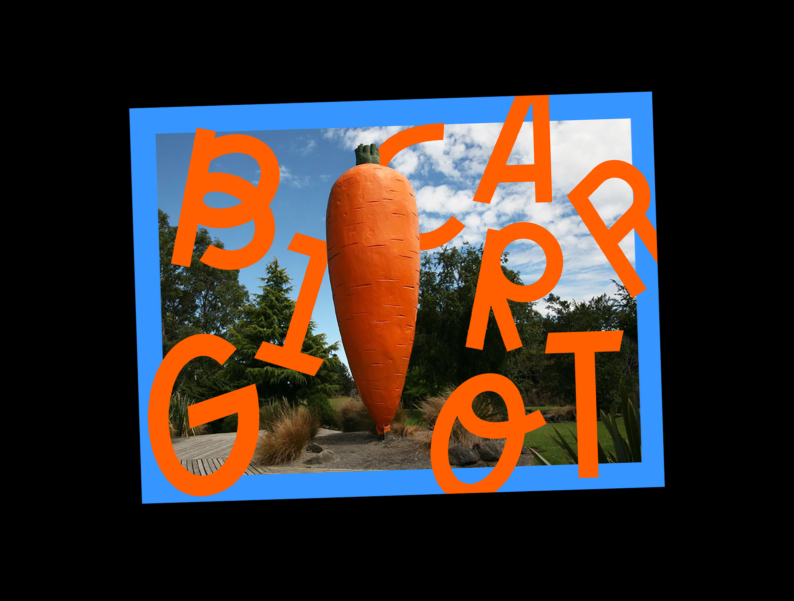
2 This 11m (36ft) tall sculpture was craned into the town of Rakaia in 1991 as an homage
to the Rakaia River, which was known for being a salmon and trout destination. Chinook salmon (also known as
Quinnat salmon) were first released in Rakaia River in the early 1900s, and New Zealand remains the only place
in the world where these salmon have established a self-sustaining population outside their natural range.
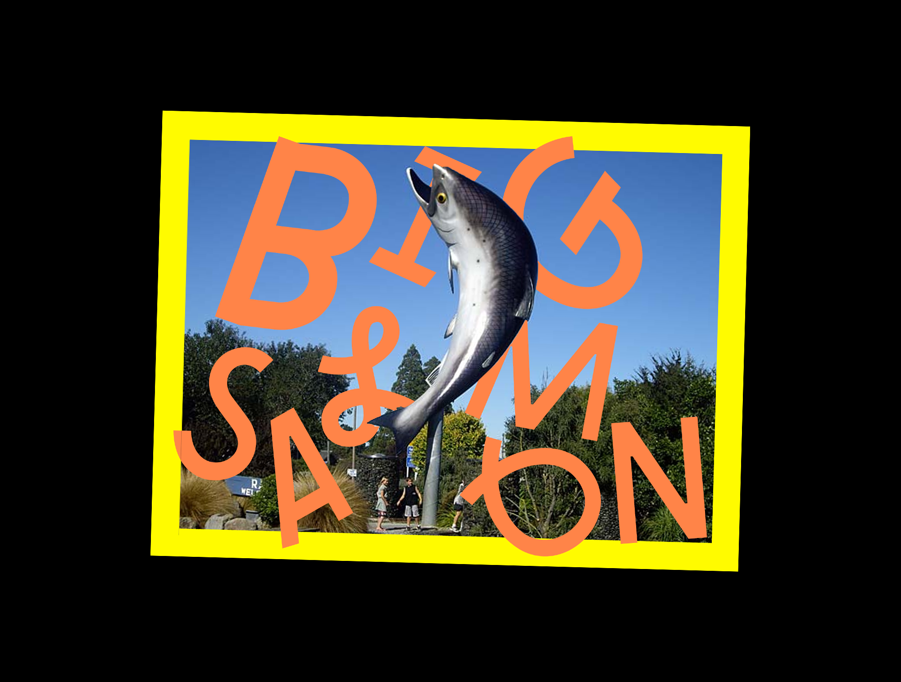
3 The Big Lemon & Paeroa (L&P) Bottle was erected in 1969, standing 6.7m (22ft) tall in
the town of Paeroa. Paeroa is known for its natural mineral springs, which in the past provided carbonated water
to make L&P (p.138→), the much-loved kiwi soft drink. The Big L&P Bottle is touted as one of the most
photographed locations in New Zealand.
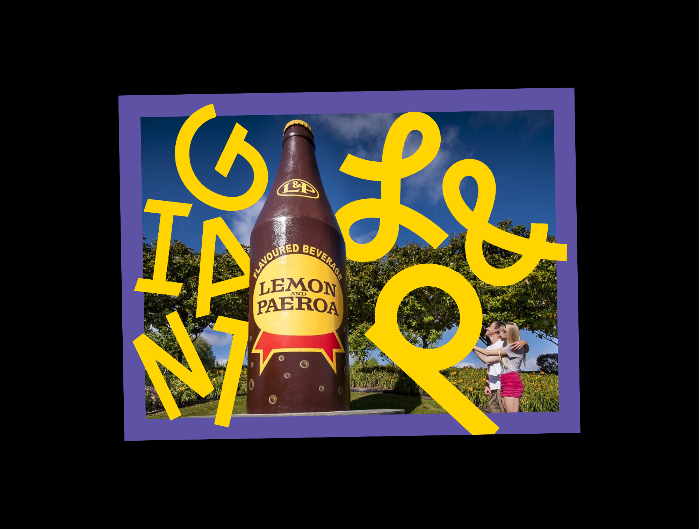
4 Tuatapere, famous its sausages from a local butchery shop, is the self-declared “Sausage
Capital of New Zealand.” The 3m (10ft) long sausage monument was gifted to the town by a radio show in 2015,
travelling all the way from Auckland to the bottom of the South Island. On its unveiling day, over 16kg (35lb)
of sausages were cooked and given away to the Tuatapere public in celebration.
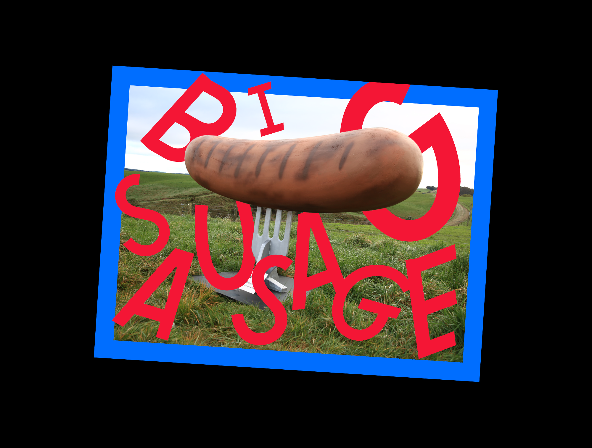
5 In 2015, a series of life-size cow sculptures titled Herd of Cows? was erected around
the town of Morrinsville to celebrate its thriving dairy industry (Waikato, the region in which Morrinsville is
located, boasts the highest number of dairy cows in New Zealand). The herd has now grown to 60 cows, and
pictured above is the largest cow of them all—Mabel the Mega Cow, standing at 6.5m (21ft) tall.
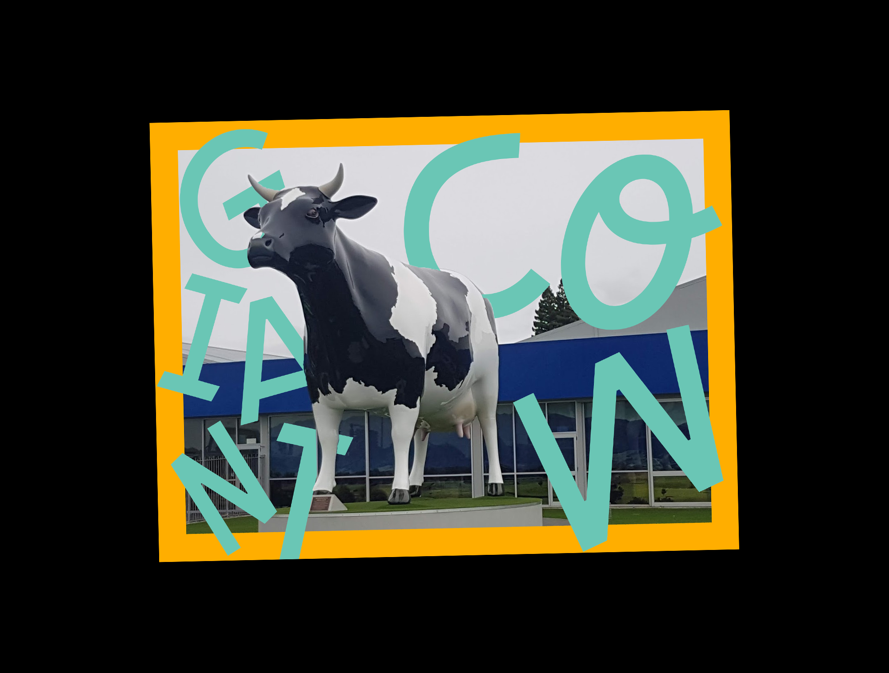
6 The Big Dog was constructed later in 1998 to accompany the Big Sheep in Tīrau (and
joined by a
Big Ram in 2016). Also in corrugated steel, the Big Dog lies as a permanent sheep herder, housing Tīrau’s
Visitor Centre within.
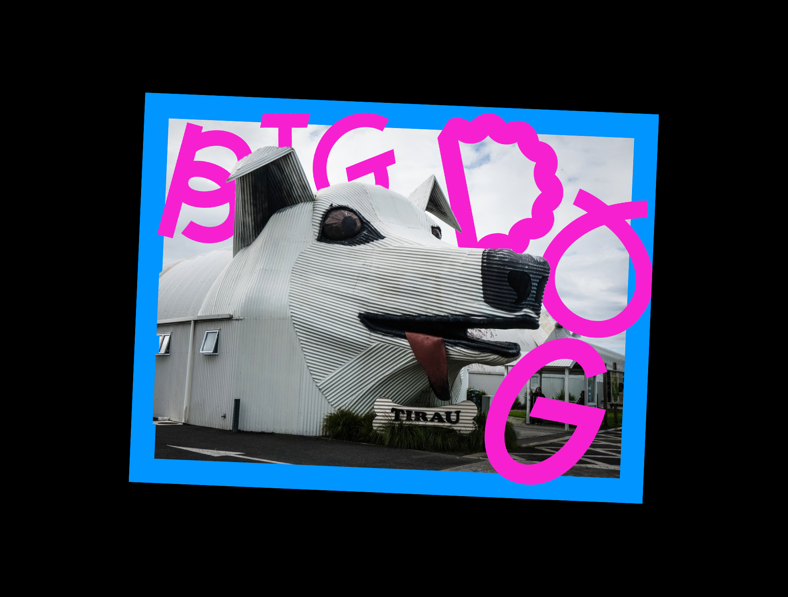
7In the early 2000s, the small town of Eketāhuna located at the foot of the Tararua ranges
rebranded itself as “Kiwi Country.” It is the closest town to the Pūkaha Mount Bruce National Wildlife Centre,
home to many native birds including the kiwi. After several rare white kiwis were born at Pūkaha Mount Bruce,
the giant kiwi was painted white in celebration.
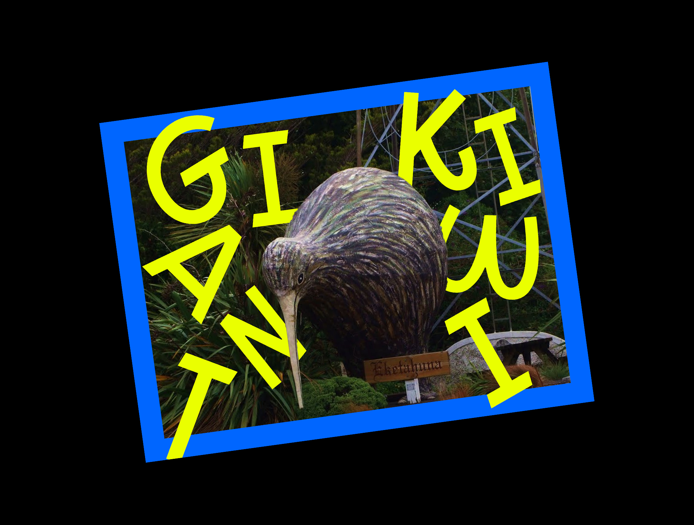
8 The giant kiwi was originally built as part of the Kiwi 360, a kiwifruit orchard and
theme park that has since closed. Bay of Plenty, the region Te Puke is located in, produces 80% of New Zealand’s
kiwifruit, the top export crop for the country. As a result, Te Puke has dubbed itself “Kiwifruit Capital of the
World.” The sculpture was repainted in 2010 to reflect the modern kiwifruit, featuring the green and gold
kiwifruit on each side.
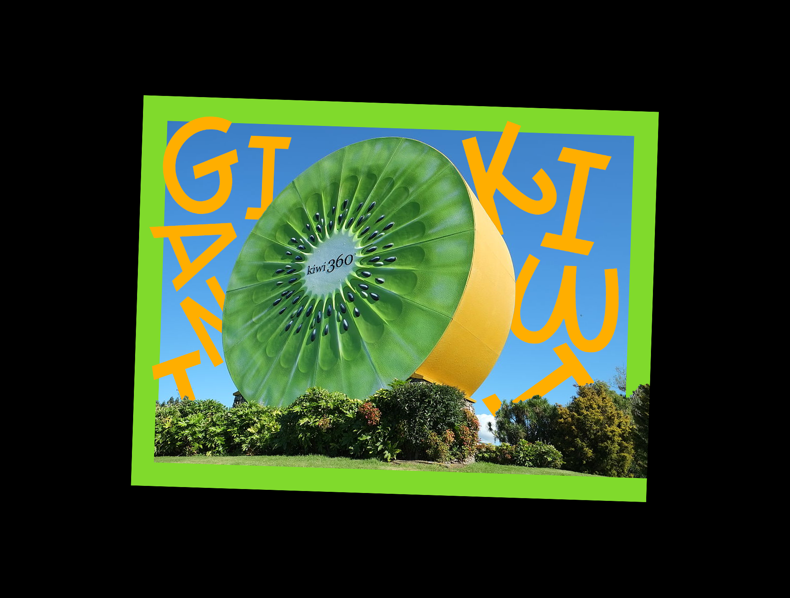
9 Dubbed the “Gumboot Capital of the World,” Taihape was first associated with gumboots in
the 70s as the hometown of fictional TV character Fred Dagg, a stereotypical kiwi farmer who wears gumboots.
Since 1985, Taihape has hosted an annual “Gumboot Day” where locals and tourists take part in gumboot-related
festivities, such as gumboot tossing.
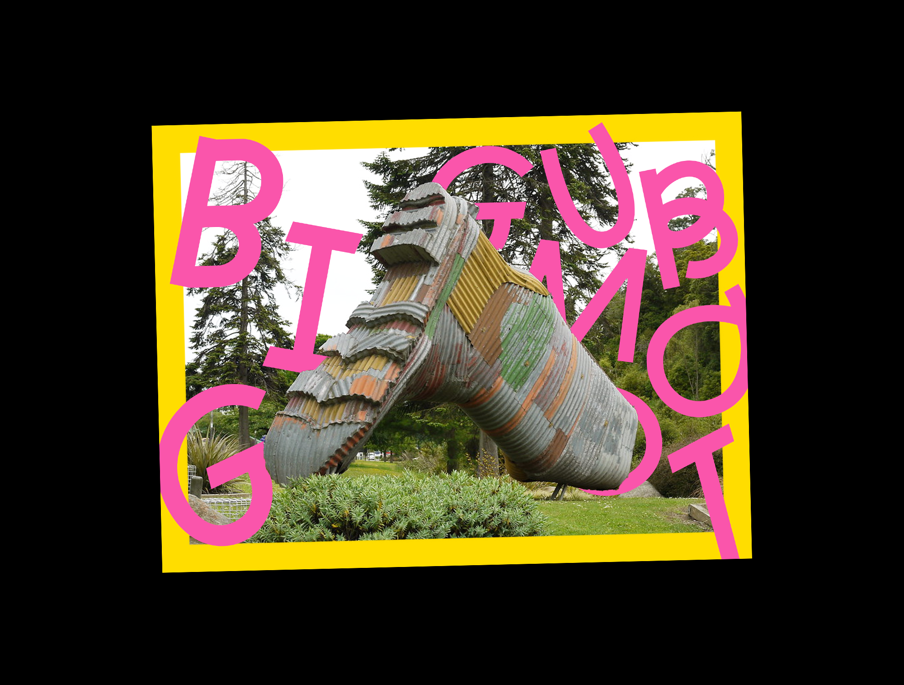
10 Manaia, a small town in South Taranaki is home to one of New Zealand’s largest bread
factories, Yarrows. The hundred-year-old Yarrows supplies fresh and frozen bread, pastries, and other baked
goods across the country as well as markets abroad, earning its hometown the title of “The Bread Capital” and a
matching sculpture in tow.
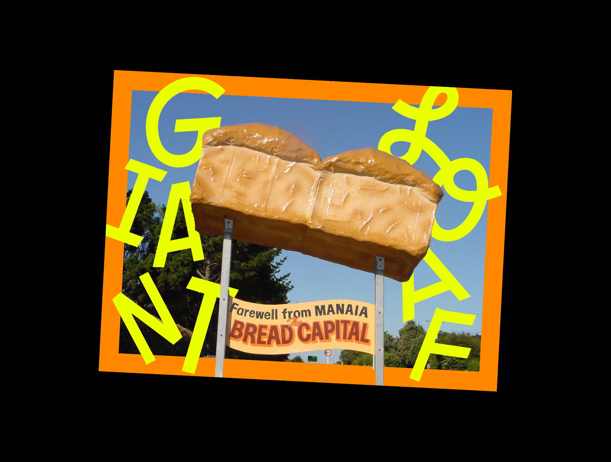
11 Tīrau was once a thriving farming community, but was in serious decline by the late
1980s. With an intention to attract tourists passing by the highway, the Big Sheep was constructed in 1994 with
discarded corrugated iron. The sculptural building successfully plucked the town from obscurity, earning it the
unofficial title of “Corrugated Capital of the World.”
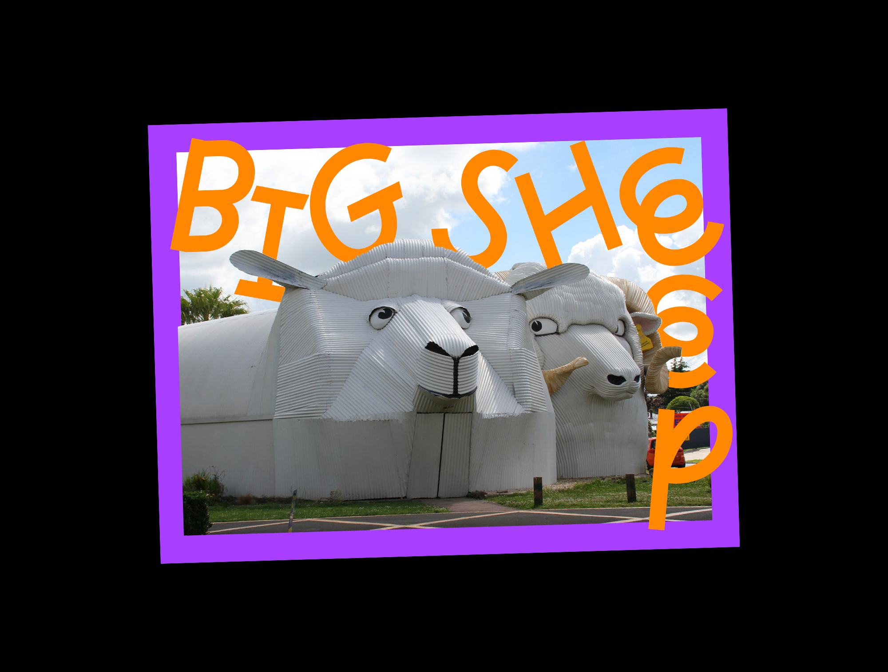
←
→
About
A small zine about Big Things—giant statues around Aotearoa.
There are a lot of Big Things in New Zealand. From large fruits to gargantuan animals, these oversized
sculptures dot the country landscape, often acting as roadside attractions or small town markers. These Big
Things are at times nostalgic and at times absurd, but always embody the unique kitschiness of kiwiana. As
they are blown up beyond proportions, they become integrated with the landscape, quite literally marking
territory and monumentizing imagined identities.